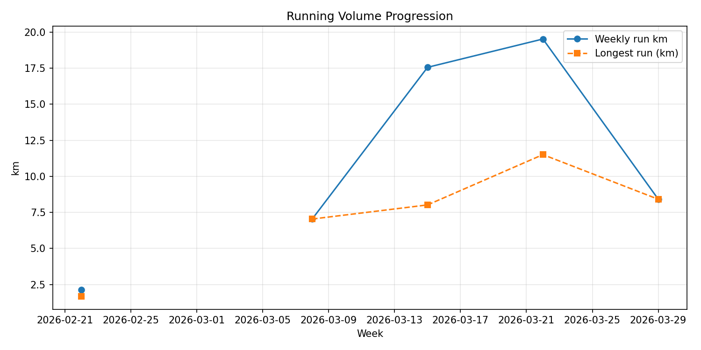
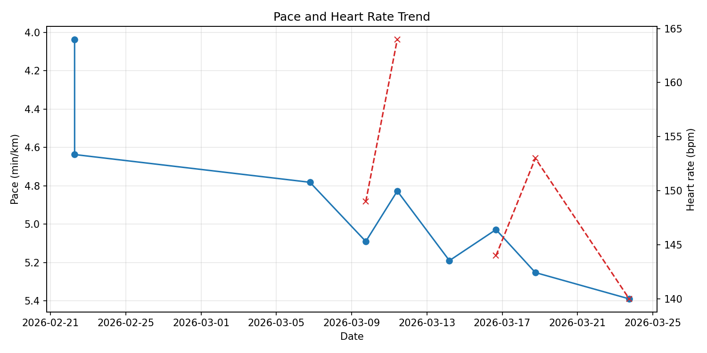
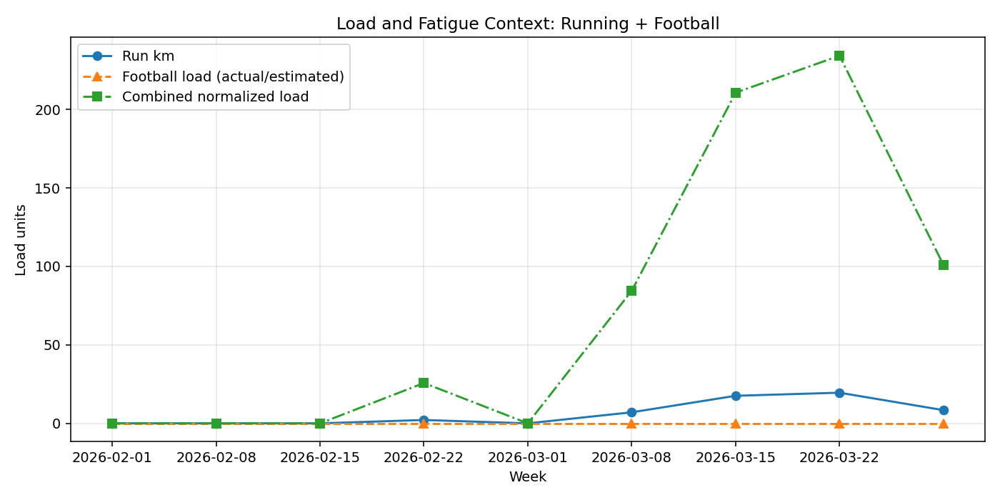
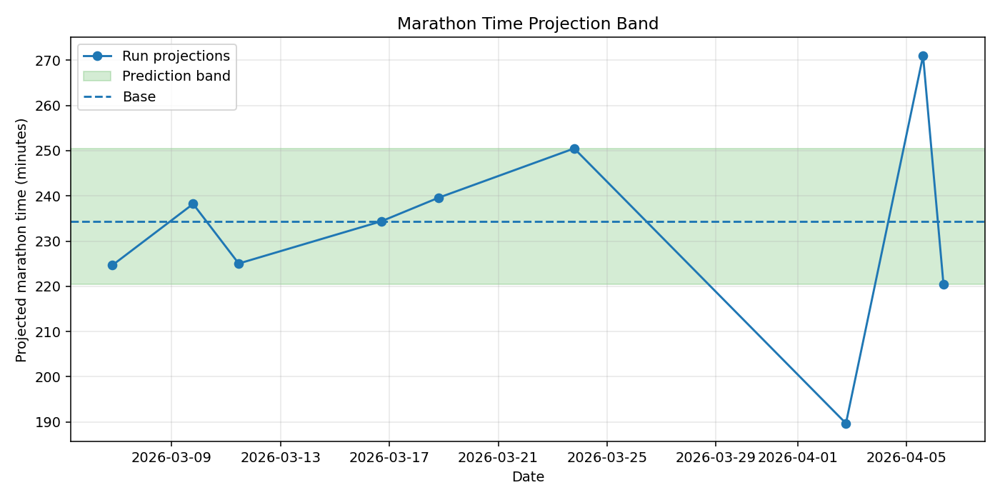
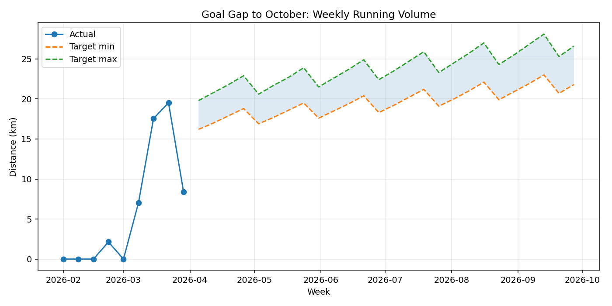
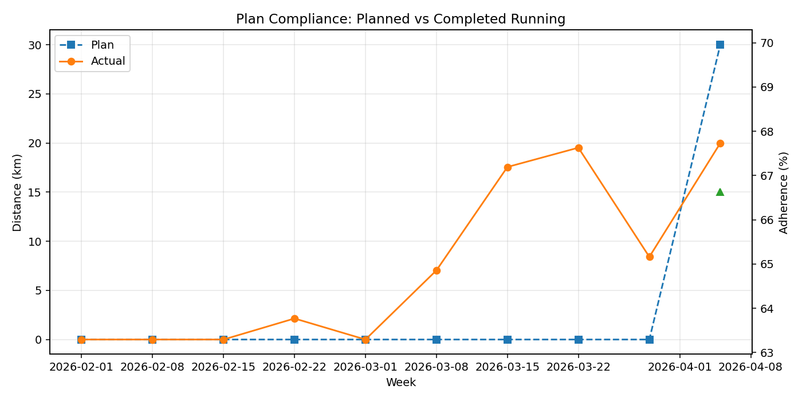

Window (from February onward): 2026-02-01 -> 2026-04-01






| week | fb_sessions | fb_load | fb_dist_km | fb_hir_km | run_sessions | run_dist_km | run_time_h | run_avg_pace | longest_run_km | run_avg_hr |
|---|---|---|---|---|---|---|---|---|---|---|
| 2026-02-01 | 1.0 | 0.0 | 0.000 | 0.000 | NaN | NaN | NaN | NaN | NaN | NaN |
| 2026-02-08 | 3.0 | 2558.0 | 16.292 | 0.306 | NaN | NaN | NaN | NaN | NaN | NaN |
| 2026-02-15 | 1.0 | 1379.0 | 8.318 | 0.119 | NaN | NaN | NaN | NaN | NaN | NaN |
| 2026-02-22 | NaN | NaN | NaN | NaN | 2.0 | 2.1409 | 0.160833 | 4.336993 | 1.6785 | NaN |
| 2026-03-01 | 3.0 | 5024.0 | 28.908 | 1.325 | NaN | NaN | NaN | NaN | NaN | NaN |
| 2026-03-08 | 2.0 | 1718.0 | 10.579 | 0.312 | 1.0 | 7.0373 | 0.560833 | 4.781663 | 7.0373 | NaN |
| 2026-03-15 | 3.0 | 2691.0 | 16.977 | 0.432 | 3.0 | 17.5547 | 1.457500 | 5.035623 | 8.0168 | 156.6 |
| 2026-03-22 | 3.0 | 4260.0 | 26.097 | 0.976 | 2.0 | 19.5186 | 1.678611 | 5.140026 | 11.5036 | 148.3 |
| 2026-03-29 | 3.0 | 1796.0 | 14.182 | 0.250 | 1.0 | 8.4089 | 0.755278 | 5.389131 | 8.4089 | 140.2 |
| week | semana_plan | fase | plan_run_km | plan_football_days | plan_quality_days | vol_objetivo_min | vol_objetivo_max | plan_vol_objetivo_km | fb_sessions | fb_load | fb_dist_km | fb_hir_km | run_sessions | run_dist_km | run_time_h | run_avg_pace | longest_run_km | run_avg_hr | run_adherence_pct | run_km_gap | quality_gap |
|---|---|---|---|---|---|---|---|---|---|---|---|---|---|---|---|---|---|---|---|---|---|
| 2026-04-05 | 1 | Base con fútbol | 30.0 | 3 | 0 | 46.0 | 50.0 | 48.0 | NaN | NaN | NaN | NaN | NaN | 0.0 | NaN | NaN | NaN | NaN | 0.0 | -30.0 | 0.0 |
| 2026-04-12 | 2 | Base con fútbol | 34.0 | 3 | 0 | 48.0 | 52.0 | 50.0 | NaN | NaN | NaN | NaN | NaN | 0.0 | NaN | NaN | NaN | NaN | 0.0 | -34.0 | 0.0 |
| 2026-04-19 | 3 | Base con fútbol | 38.0 | 3 | 1 | 52.0 | 56.0 | 54.0 | NaN | NaN | NaN | NaN | NaN | 0.0 | NaN | NaN | NaN | NaN | 0.0 | -38.0 | -1.0 |
| 2026-04-26 | 4 | Base con fútbol - descarga | 28.0 | 3 | 1 | 42.0 | 46.0 | 44.0 | NaN | NaN | NaN | NaN | NaN | 0.0 | NaN | NaN | NaN | NaN | 0.0 | -28.0 | -1.0 |
| 2026-05-03 | 5 | Base con fútbol | 40.0 | 3 | 1 | 54.0 | 58.0 | 56.0 | NaN | NaN | NaN | NaN | NaN | 0.0 | NaN | NaN | NaN | NaN | 0.0 | -40.0 | -1.0 |
| 2026-05-10 | 6 | Base con fútbol | 42.0 | 3 | 1 | 56.0 | 60.0 | 58.0 | NaN | NaN | NaN | NaN | NaN | 0.0 | NaN | NaN | NaN | NaN | 0.0 | -42.0 | -1.0 |
| 2026-05-17 | 7 | Base con fútbol | 48.0 | 3 | 0 | 60.0 | 64.0 | 62.0 | NaN | NaN | NaN | NaN | NaN | 0.0 | NaN | NaN | NaN | NaN | 0.0 | -48.0 | 0.0 |
| 2026-05-24 | 8 | Base con fútbol - descarga | 34.0 | 3 | 0 | 48.0 | 52.0 | 50.0 | NaN | NaN | NaN | NaN | NaN | 0.0 | NaN | NaN | NaN | NaN | 0.0 | -34.0 | 0.0 |
| 2026-05-31 | 9 | Construcción con fútbol | 48.0 | 3 | 1 | 60.0 | 64.0 | 62.0 | NaN | NaN | NaN | NaN | NaN | 0.0 | NaN | NaN | NaN | NaN | 0.0 | -48.0 | -1.0 |
| 2026-06-07 | 10 | Construcción con fútbol | 48.0 | 3 | 1 | 62.0 | 66.0 | 64.0 | NaN | NaN | NaN | NaN | NaN | 0.0 | NaN | NaN | NaN | NaN | 0.0 | -48.0 | -1.0 |
| 2026-06-14 | 11 | Construcción con fútbol | 54.0 | 3 | 1 | 66.0 | 70.0 | 68.0 | NaN | NaN | NaN | NaN | NaN | 0.0 | NaN | NaN | NaN | NaN | 0.0 | -54.0 | -1.0 |
| 2026-06-21 | 12 | Construcción con fútbol - descarga | 40.0 | 3 | 0 | 54.0 | 58.0 | 56.0 | NaN | NaN | NaN | NaN | NaN | 0.0 | NaN | NaN | NaN | NaN | 0.0 | -40.0 | 0.0 |
| 2026-06-28 | 13 | Construcción con fútbol | 54.0 | 3 | 1 | 66.0 | 70.0 | 68.0 | NaN | NaN | NaN | NaN | NaN | 0.0 | NaN | NaN | NaN | NaN | 0.0 | -54.0 | -1.0 |
| 2026-07-05 | 14 | Específica verano sin fútbol | 66.0 | 0 | 2 | 66.0 | 66.0 | 66.0 | NaN | NaN | NaN | NaN | NaN | 0.0 | NaN | NaN | NaN | NaN | 0.0 | -66.0 | -2.0 |
| 2026-07-12 | 15 | Específica verano sin fútbol | 69.0 | 0 | 2 | 69.0 | 69.0 | 69.0 | NaN | NaN | NaN | NaN | NaN | 0.0 | NaN | NaN | NaN | NaN | 0.0 | -69.0 | -2.0 |
| 2026-07-19 | 16 | Específica verano sin fútbol - descarga | 56.0 | 0 | 2 | 56.0 | 56.0 | 56.0 | NaN | NaN | NaN | NaN | NaN | 0.0 | NaN | NaN | NaN | NaN | 0.0 | -56.0 | -2.0 |
| 2026-07-26 | 17 | Específica verano sin fútbol | 70.0 | 0 | 2 | 70.0 | 70.0 | 70.0 | NaN | NaN | NaN | NaN | NaN | 0.0 | NaN | NaN | NaN | NaN | 0.0 | -70.0 | -2.0 |
| 2026-08-02 | 18 | Específica verano sin fútbol | 66.0 | 0 | 3 | 66.0 | 66.0 | 66.0 | NaN | NaN | NaN | NaN | NaN | 0.0 | NaN | NaN | NaN | NaN | 0.0 | -66.0 | -3.0 |
| 2026-08-09 | 19 | Específica verano sin fútbol | 76.0 | 0 | 3 | 74.0 | 74.0 | 74.0 | NaN | NaN | NaN | NaN | NaN | 0.0 | NaN | NaN | NaN | NaN | 0.0 | -76.0 | -3.0 |
| 2026-08-16 | 20 | Específica verano sin fútbol - descarga | 60.0 | 0 | 2 | 60.0 | 60.0 | 60.0 | NaN | NaN | NaN | NaN | NaN | 0.0 | NaN | NaN | NaN | NaN | 0.0 | -60.0 | -2.0 |
| 2026-08-23 | 21 | Específica verano sin fútbol - pico | 76.0 | 0 | 3 | 76.0 | 76.0 | 76.0 | NaN | NaN | NaN | NaN | NaN | 0.0 | NaN | NaN | NaN | NaN | 0.0 | -76.0 | -3.0 |
| 2026-08-30 | 22 | Específica verano sin fútbol | 70.0 | 0 | 2 | 70.0 | 70.0 | 70.0 | NaN | NaN | NaN | NaN | NaN | 0.0 | NaN | NaN | NaN | NaN | 0.0 | -70.0 | -2.0 |
| 2026-09-06 | 23 | Construcción específica con fútbol | 48.0 | 3 | 1 | 62.0 | 66.0 | 64.0 | NaN | NaN | NaN | NaN | NaN | 0.0 | NaN | NaN | NaN | NaN | 0.0 | -48.0 | -1.0 |
| 2026-09-13 | 24 | Construcción específica con fútbol | 54.0 | 3 | 2 | 68.0 | 72.0 | 70.0 | NaN | NaN | NaN | NaN | NaN | 0.0 | NaN | NaN | NaN | NaN | 0.0 | -54.0 | -2.0 |
| 2026-09-20 | 25 | Taper 1 | 42.0 | 3 | 1 | 54.0 | 58.0 | 56.0 | NaN | NaN | NaN | NaN | NaN | 0.0 | NaN | NaN | NaN | NaN | 0.0 | -42.0 | -1.0 |
| 2026-09-27 | 26 | Taper 2 | 34.0 | 3 | 1 | 46.0 | 50.0 | 48.0 | NaN | NaN | NaN | NaN | NaN | 0.0 | NaN | NaN | NaN | NaN | 0.0 | -34.0 | -1.0 |
| 2026-10-04 | 27 | Taper 3 | 25.5 | 3 | 1 | 34.0 | 40.0 | 37.0 | NaN | NaN | NaN | NaN | NaN | 0.0 | NaN | NaN | NaN | NaN | 0.0 | -25.5 | -1.0 |
| 2026-10-11 | 28 | Semana de carrera | 53.2 | 2 | 0 | 66.0 | 74.0 | 70.0 | NaN | NaN | NaN | NaN | NaN | 0.0 | NaN | NaN | NaN | NaN | 0.0 | -53.2 | 0.0 |
| week | target_weekly_km_min | target_weekly_km_max | target_long_run_km_min | target_long_run_km_max |
|---|---|---|---|---|
| 2026-04-05 | 16.2 | 19.8 | 9.5 | 13.5 |
| 2026-04-12 | 17.2 | 21.0 | 10.1 | 14.1 |
| 2026-04-19 | 18.2 | 22.2 | 10.7 | 14.7 |
| 2026-04-26 | 19.3 | 23.6 | 11.3 | 15.3 |
| 2026-05-03 | 17.0 | 20.8 | 10.0 | 14.0 |
| 2026-05-10 | 18.0 | 22.0 | 10.6 | 14.6 |
| 2026-05-17 | 19.1 | 23.3 | 11.2 | 15.2 |
| 2026-05-24 | 20.2 | 24.7 | 11.9 | 15.9 |
| 2026-05-31 | 17.8 | 21.8 | 10.5 | 14.5 |
| 2026-06-07 | 18.9 | 23.1 | 11.1 | 15.1 |
| 2026-06-14 | 20.0 | 24.4 | 11.8 | 15.8 |
| 2026-06-21 | 21.2 | 25.9 | 12.5 | 16.5 |
| 2026-06-28 | 18.7 | 22.8 | 11.0 | 15.0 |
| 2026-07-05 | 19.8 | 24.2 | 11.7 | 15.7 |
| 2026-07-12 | 21.0 | 25.6 | 12.3 | 16.3 |
| 2026-07-19 | 22.2 | 27.2 | 13.1 | 17.1 |
| 2026-07-26 | 19.5 | 23.9 | 11.6 | 15.6 |
| 2026-08-02 | 20.7 | 25.3 | 12.2 | 16.2 |
| 2026-08-09 | 22.0 | 26.8 | 12.9 | 16.9 |
| 2026-08-16 | 23.3 | 28.5 | 13.7 | 17.7 |
| 2026-08-23 | 20.5 | 25.0 | 12.1 | 16.1 |
| 2026-08-30 | 21.7 | 26.5 | 12.8 | 16.8 |
| 2026-09-06 | 23.0 | 28.1 | 13.6 | 17.6 |
| 2026-09-13 | 24.4 | 29.8 | 14.3 | 18.3 |
| 2026-09-20 | 21.5 | 26.2 | 12.7 | 16.7 |
| 2026-09-27 | 22.8 | 27.8 | 13.4 | 17.4 |